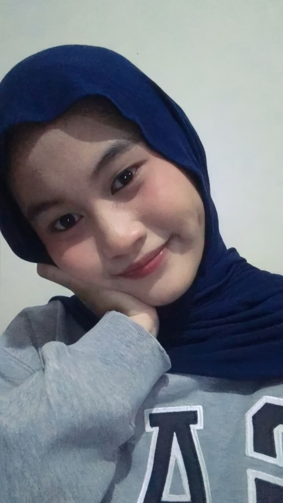

`
Foto Profil

📝 Tentang Saya
Halo! Perkenalkan nama saya Baiq Reingganis Sutami. Saya lahir di
Medan pada tanggal 12 Desember 2006. Saat ini saya sedang
Kuliah di sebuah Universitas di Medan yaitu Universitas Muhammadiyah Sumatera Utara
Saya memiliki ketertarikan yang besar dalam bidang teknologi,
terutama web development
Saya selalu bersemangat untuk belajar hal-hal baru dan mengembangkan
keterampilan saya.
📋 Data Pribadi
- Nama Lengkap: Baiq Reingganis Sutami
- Tempat, Tanggal Lahir: Medan, 12 Desember 2006
- Alamat: Jl. Istiqomah No.26
- Status: Belum Menikah
- Agama: Islam
- Kewarganegaraan: Indonesia
🎨 Hobi & Minat
- Traveling ke tempat-tempat baru
- Menonton film dan series
- Mendengarkan musik
🎓 Riwayat Pendidikan
-
SD Laksamana Martadinata (2012 - 2018)
Lulus
-
SMP Laksamana Martadinata (2018 - 2021)
Lulus
-
SMA Laksamana Martadinata (2021 - 2024)
Jurusan IPA, Lulus
💻 Keterampilan
- Programming Languages: HTML, Python, Java
- Database: MySQL, MariaDB
- Tools: VS Code, XAMPP
- Languages: Indonesia (Native)
💼 Pengalaman Akademik
-
Algoritma dan Pemrograman (Python) - Semester 1
Membuat program sederhana pencatatan dan pengelolaan tugas menggunakan Python
-
Struktur Data (VS Code) - Semeter 2
Mengimplementasikan struktur data Binary Tree.
-
Teknologi Open Source (Virtual Box) - Semester 2
Mengembangkan web sederhana pada server lokal (client server)
-
Sistem Informasi Manajemen (Draw.io) - Semester 3
Menyusun flowchart, ERD, dan DFD untuk menggambarkan alur kerja, hubungan data, serta proses yang terjadi dalam sistem
📞 Kontak Saya
📱 Social Media
Facebook |
Twitter |
Instagram